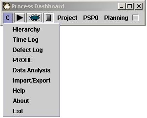

The dashboard is configured and various actions are taken by choosing the configure menu. It is shown with just the letter "C" in order to keep the dashboard as small as possible.
The various entries on this menu allow access to various tools and editors to give you complete control of your PSP data. Follow the links below to get specific help for each of the entries.
| On-the-job use of this tool is not intended to replace formal PSP training. Engineers interested in using the PSP should complete a PSP training course taught by an SEI certified PSP Instructor. |